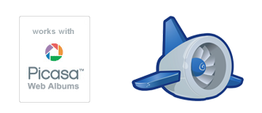
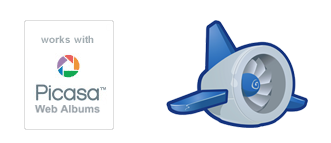

近期狂迷Google，程度不啻我当年爱苹果。苹果胜在易用性和世界一流的人机交互，而Google则是在于免费的服务和性能的强势。这几天都在发掘Google的功能，而随着我用他家东西越多久越不可抑制地澎湃着对其信仰般的崇拜。现在我的账户下使用的产品目录已经有20多种了，特别是它提供的面向开发者的资源很多都是目前你能获得的最好选择。

介绍三个，也借此介绍下本站的几处小改动。
近期狂迷Google，程度不啻我当年爱苹果。苹果胜在易用性和世界一流的人机交互，而Google则是在于免费的服务和性能的强势。这几天都在发掘Google的功能，而随着我用他家东西越多久越不可抑制地澎湃着对其信仰般的崇拜。现在我的账户下使用的产品目录已经有20多种了，特别是它提供的面向开发者的资源很多都是目前你能获得的最好选择。

介绍三个，也借此介绍下本站的几处小改动。
做这个站子的时候，是从顶上的菜单栏开始。决定用固定的菜单条，然后参考一个国外的网站对定下了配色方案。然后是做的portfolio页面，然后做这个博客的皮。再是留言本，再相片页，然后收尾。
决定一个自己满意的banner并不容易，檐字的字体倒是早敲定的，做上一版的博客皮肤时就在用，可惜字体库不全，只有一些常见字。如下的历史版本，曾一度想用单字的檐，其他空无。没有做出满意的banner是开始动工的日子一再拖延的主因。

最近因为项目进行到开发阶段，我们的八人小组需要对开发代码进行版本控制。而在我们个人的PC上搭建一个SVN服务器显得有点困难。经人提点，我们选择用GoogleCode做我们的SVN服务器托管我们的项目。
首先要确保所有项目组成员都有一个google账号。顺便提一句，google账号真是好东西。Google提供了很多优质且免费的服务，个人当前在用的有cal、reader、gmail、文档，desktop、Picasa等服务，大吃免费午餐。
平时做点小站子的需要，我常常要在各种浏览器上测试兼容性。常跑的有IE、FF、Safari和去年年末新增的Chrome。偶尔会加个Opera。最近各大浏览器厂商动作频繁，我也下了新版的IE8和Safari4(Beta)尝新。在此写点使用体会。
先谈谈Safari4。这是苹果公司的浏览器，号称全球最快。现在还是Beta版。我是从Safari3开始使用的，不过不常开。因为实在是太难看了。无论是苹果惯有的“现代灰”色调还是笨拙的黑体都充分说明这是一个从Mac平台向Windows移植的试验品。而且，由于默认字体的缘故，国内的网站没有几个与其兼容。其实用Safari3的时候，我也只用它开一个网站——苹果的官网。同样缘于苹果的专用字体，它的官网意料之中地与其兼容出奇的好，速度也是出奇地快。

昨天把数据库换成了sql server 2005。
之前在用VS2005在学习asp.net。测试用的数据源配置是sql server 2000中的示例数据库northwind，虽然每次只需要打开服务，可是总不如书本里面的使用sql server 2005 express引擎来得方便和直接。同一版本号的可能总是比较兼容吧。再加上想尝试新版本的软件，So……
网上一些源可以下地很快，安装却有点麻烦。我在这两天里装了三次。— —||| 这里记叙下安装日志，有需要的朋友看看或许能少走弯路。